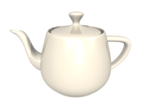
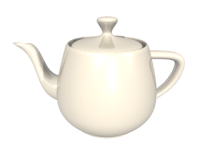

- Observe that in this example each image is uniquely identified with an ID, so specific CSS selector can be used. e.g....
- To change the image opacity add
opacity: 0.5; to the #teapot rule
- To hide the
#uni element completely you can add either visibility: hidden; or display: none;
- What's the visual difference between those two?